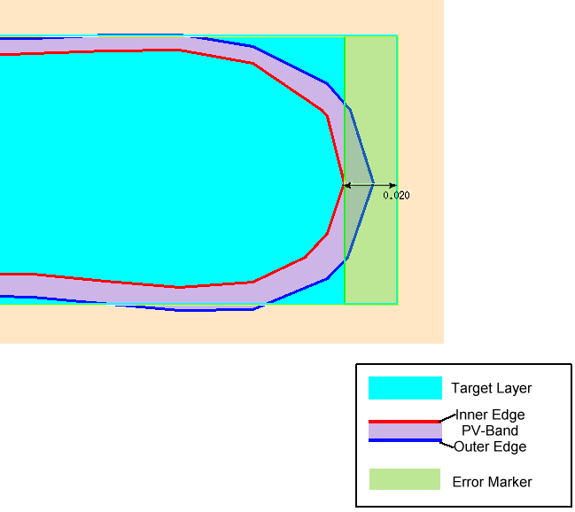
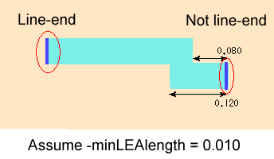

LineEndCheck
-layer input_layer_name
-subwindow expr_number
-maxLFDdistance deviation_dist
[-displacement {min | max}]
-maxLineEnd line_end_width
[-minLEAlength min_length]
[-security {no | yes}]
[-layer1 support_layer1 [-layer2 support_layer2]]
[-markerLayer layer_name]
[-markerLength marker_len]
[-anchorLayer “%reference” | “%drawn” | “%retarget” | layer_name]
[-referenceLayer “%drawn” | “%retarget” | layer_name]
[-layerContourCondition contour_condition]
[-property {no | yes | Max}]
[-checkName cName]
[-priority cPriority]
[-indexFilter value]
[-comment comment_text]
[-classify handle]
[-appendMarker extra_markers_layer]
[-contourHandle contour_handle]
{-database db_name | -layerOut return_layer_name
| -database db_name -layerOut return_layer_name}
LineEndCheck
-layer input_layer_name
-pdkCheckName check_template
-database db_name
[additional_options]
LineEndCheck (LEC) measures the distance by which a line-end deviates from the target edge and reports errors when this deviation is greater than the specified amount. This check is useful for evaluating line-end pullbacks, for which the PV-band is inside the target edge, and line-end extensions, for which the PV-band is outside the target edge.
This check evaluates only the line-ends on a single layer. Supply the names of contact or via layers to constrain the check to only those line-ends adjacent to a contact or via.

The LineEndCheck function writes all errors discovered by the check to the Calibre nmDRC RDB. It also associates a score to each error and writes it to the Check Database specified by the -database argument. The score is calculated as the area of the model-based violation.
If used with a PDK, this function calls a LineEndCheck defined in the PDK and runs it for the specified layer, writing check results to the specified database.
Required keyword and argument defining the name of the layer you are checking. This is a layer for which PV-bands are generated and must contain the line ends to check.
Required keyword and argument defining the process variation experiment to which this check applies. You must reference individual process variation experiments by their positions in the -opticalSpanList and -doseSpanList arguments to the PVband command used to generate the PV-band data being checked. Thus, expr_number refers to an index to a list of experiments.
Setting expr_number to a value of “expr_number_shift” causes the check to operate on a certain shift for a double-patterned PV-band with overlay (for example, -subwindow 1_N causes the check to only run on the north shift).
Required keyword and argument defining the maximum allowed deviation from the target. Any line-end for which the PV-band is farther than the distance from the target line-end is considered an error.
When the deviation_dist is a negative number, the check identifies problems caused by line-end shortening, or pullbacks. In this case, the PV-band for the line-end is found inside of the target edge.
When the deviation_dist is a positive number, the check identifies problems caused by lineend lengthening, or extensions. In this case, the PV-band for the line-end is found outside of the target edge.
Optional keyword used to specify which edge of the PV-band to use in measuring line‑end displacement. The default varies to the kind of line-end under investigation:
For pullbacks, the default is “min,” which measures to the inner edge of the PV‑band.
For extensions, the default is “max,” which measures to the outer edge of the PV‑band.
Required keyword and argument used to constrain the checks to line-ends having a width less than or equal to line_end_width.
Optional keyword used to constrain the check to those line-ends having both adjacent edges equal to or greater than the specified length. The default value is 2* maxLineEnd.

Optional argument defining security privileges. If set to “yes”, the setup file is encrypted in the transcript.
A pair of optional keywords and arguments used to supply one or two additional layers against which to check line ends. These layers must be original layers (not PV-band layers) and should contain either contacts or vias.
The check evaluates only those line-ends within a distance of ‑minLEAlength from at least one of the contacts or vias on these layers.
Optional keyword and argument used to constrain the check to those contours that lie within polygons on layer_name. The function ignores areas outside polygons on the layer.
A -layerOut layer or a derivation of a -layerOut layer should not be used as the input to ‑markerLayer, or a circular layer definition results.
Optional keyword and argument defining the length of the markers to create for each error. The default marker length is 10*dbu. One database unit equals one micrometer times the precision.
Optional keyword and argument to have the output error markers from the checks anchored on a different layer than the input drawn layer of the checks, and different from the reference layer input to the check.
You can provide one of the following options as an input to this argument:
“%reference” — Default. The output error markers are anchored to the layer input to -referenceLayer.
“%drawn” — The output error markers of the check are anchored to the drawn layer input to the check with -layer.
“%retarget” — The output error markers of the check are anchored to the retarget layer of the input drawn layer of the check. The check stores the retarget layer name in the PDK.
layer_name — You can define any layer name to have the output error markers anchored to it. This argument can be used when no PDK is used, and you know the name of the retarget layer.
Optional keyword and argument to have the check measurements calculated on a different layer than the input layer to the checks for which the PV-bands have been generated.
You can provide one of the following options as an input to this argument:
“%drawn” — Default. The check measurements are calculated with respect to the drawn layer input to the check with -layer.
“%retarget” — The check measurements are calculated with respect to the retarget layer of the input drawn layer of the check. The check stores the retarget layer name in the PDK.
layer_name — You can define any layer name to have the check measurements done with respect to it. This argument can be used when no PDK is used, and you know the name of the retarget layer.
Optional keyword and argument to define a -layer check on any defined contour condition in the PV-band, as opposed to only on the inner or outer PV-band contours.
You can provide one of the following options as an input to this argument:
min — Specifies the command works on the inner PV-band contour.
max — Specifies the command works on the outer PV-band contour.
integer — This integer is the order of the experiment in the subwindow. In the LFD::PVband command, by default subwindows are assumed to be constructed as extensions to previously-created subwindows, so the order of experiments is counted from the first subwindow. If the LFD::PVband -independentWindows option is set, the order of experiments is only counted in the defined subwindow.
process condition list — This must be an ordered list, with 3, 4, 5, 6, 8, or 10 elements defining an explicit process condition. The list must be supplied as follows:
{optical1 dose1 size1 [resist1 etch1] [optical2 dose2 size2 [resist2 etch2]]}
These values must define a process condition (dose and focus settings) that is one of the conditions evaluated by the LFD::PVband or LFD::RegisterContour commands for the layer.
This switch is useful when variations between layers are well‑controlled, and you are interested in considering process variations of one layer over the nominal behavior of another.
Optional keyword and argument specifying whether or not the check should save error measurement data to the RDB database.
no — The check does not report the error measurement. By default, property values are not saved.
yes — The check reports the error measurement.
Max — The check reports the maximum distance from the target line-end to the tip of feature.
Optional keyword and argument specifying the name to use for the check in the RDB. If not specified, the check in the RDB is assigned a system-generated name as defined in Table 1. Use this keyword to avoid name collisions when performing multiple checks of this type.
Optional keyword and argument specifying a priority for this check. If not specified, the check in the RDB is assigned a system-generated priority based on the -subwindow value and default ranking of 1, as defined in Table 2. cPriority must be an integer value.
Optional keyword and value used to filter out inconsequential errors. Only errors having an index greater than or equal to the value are written to the Check Database.
The index is defined as:
where:
Optional keyword and argument used with -database for defining the comment text to be reported in the RDB if the check encounters a violation of the type. If not specified, the comment is “LineEndCheck Violation: Try increasing the width of the line or increasing the spacing between facing features.”
The comment_text must be a single string, so comments containing spaces must be enclosed in braces. For example:
-comment {This is my comment.} Optional keyword and argument used to define a handle to point to an LFD::ClassifyConfig object.
Optional keyword and argument used to add the polygons in the extra_markers_layer layer to the output of the check. The output retains the properties on the extra_markers_layer layer supported by the check. This option is not allowed for checks that are tied to an LFD::StructureOptimizer.
Optional keyword and argument used to perform Calibre LFD checks on specific contour handles. This option is for use with the contour handle generated using the Customizable PV-Bands flow.
Required keyword and argument defining the RDB to which violations identified by the check are written. You must indicate where the violations are written by specifying ‑database or ‑layerOut or both.
Required keyword and argument defining the name of a derived layer to which the violations identified by the check are written. This layer exists in memory and can be referenced in subsequent Calibre nmDRC operations. You must indicate where the violations are written by specifying -database or -layerOut or both.
A -layerOut layer or a derivation of a -layerOut layer should not be used as the input to ‑markerLayer, or a circular layer definition results.
Required keyword and argument specifying the name of the check template defining how the check is performed.
Optional keywords and arguments allowed only when the security settings within the PDK permit you to modify the settings for this command. These can be any of the options for the non-PDK LineEndCheck command. Any additional options specified overrides the options defined within the PDK.
LFD::LineEndCheck \
-layer poly \
-maxLFDdistance 0.15 \
-maxLineEnd 0.01 \
-subwindow 1 \
-database $lfdErrorDb